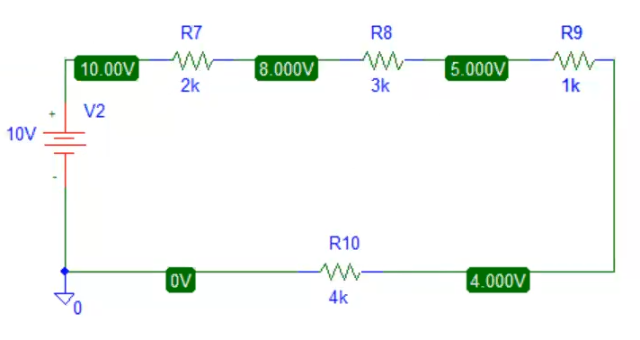
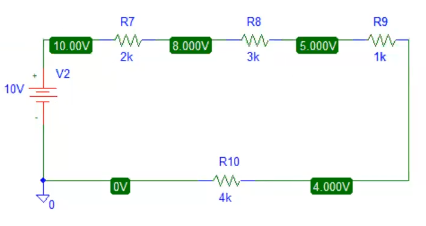1. Componentes
a. Passivos - Retiram energia ao circuito (transformando em)
i. Resistencia (calor)
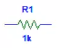
ii. Condensador (campo eletrico)
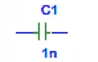
iii. Bobine (campo magnetico)
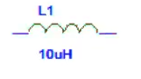
b. Activos - Fornecem energia ao circuito
i. Fontes de tensão
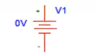
ii. Fontes de corrente
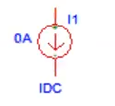
2. Análise Circuitos
1. Circuitos Simples (circuitos com uma fonte)
a. Ferramentas:
i. Fórmula do divisor de tensão.
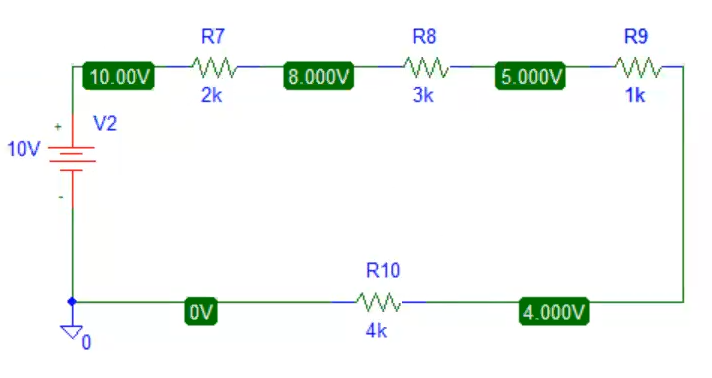
ii. Fórmula do divisor da corrente.
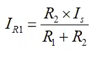
iii. Associaão de resistências.
Resistências em série.
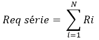 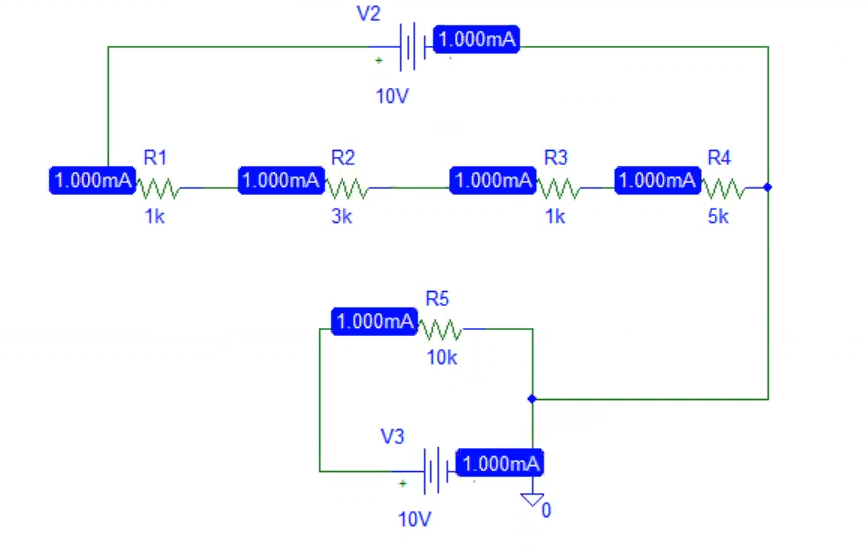
Resistências em paralelo.
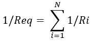 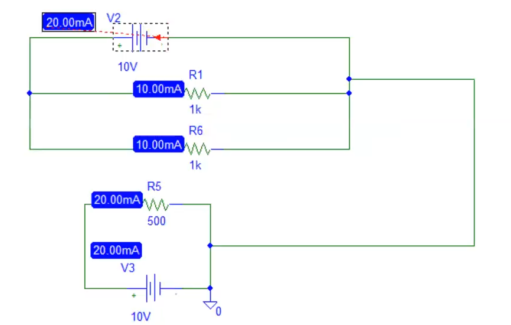
Lei dos nós
O sumatorio das correntes que entram é igual ao sumatirio das correntes que saiem de um nó.
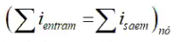
Lei das Malhas
O sumatorio das quedas de tensão numa malha é nulo.
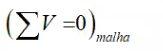
1. Circuitos Complexos

a. Técnicas de análises de circuitos
i. Método direto
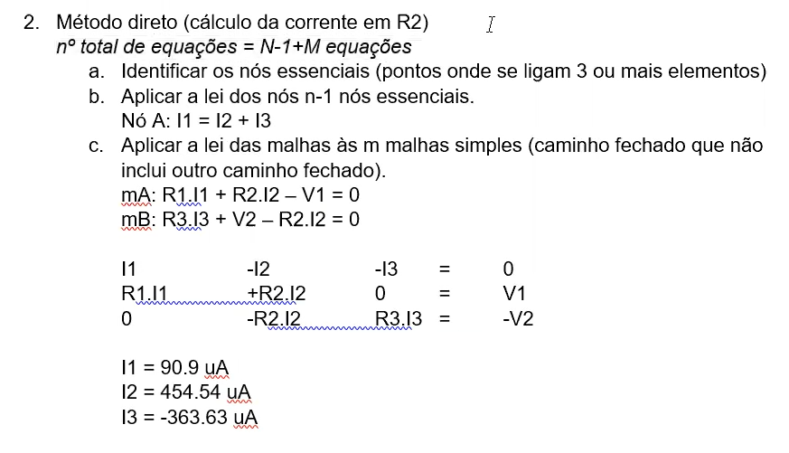
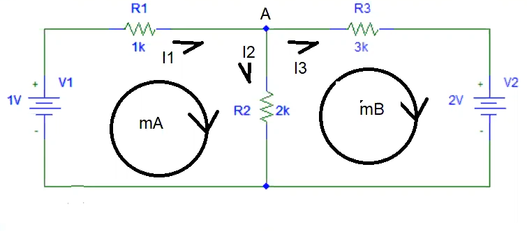
ii. Método das malhas
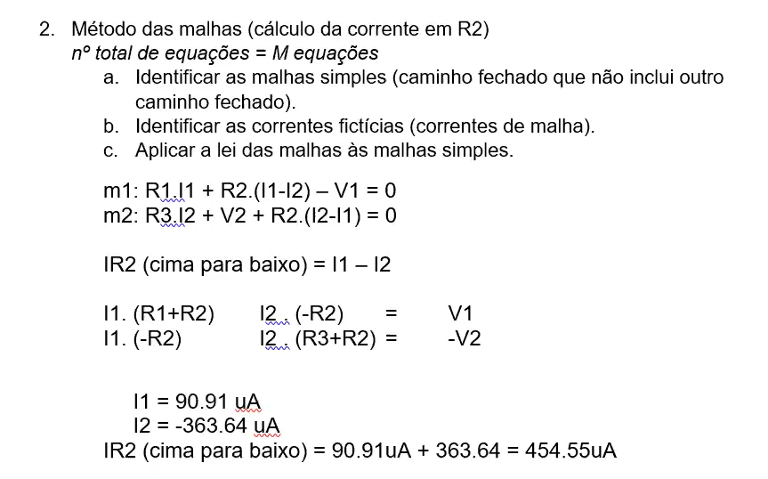
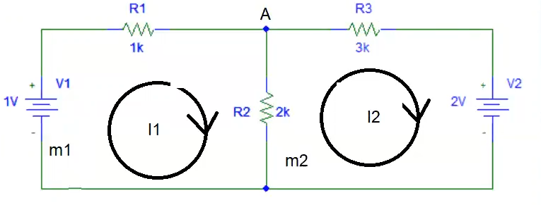
iii. Métodos nodais
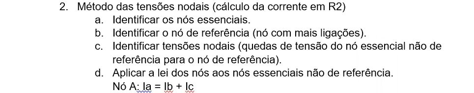
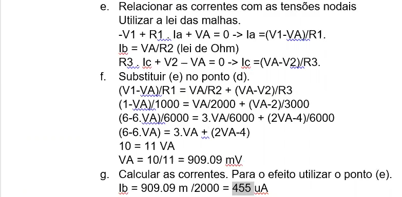
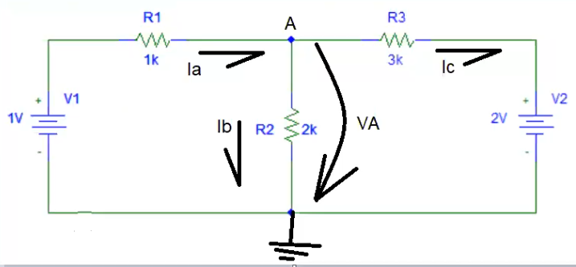
Conceito de super-malha:


Quando entre duas malhas simples existe um ramo com uma fonte de corrente.
Aplicar método das malhas
Aplicar a lei das malhas à super-malha.
Relacionar as correntes de malha com a corrente do ramo contido na super-malha.
Resolvendo
1º Super-malha:
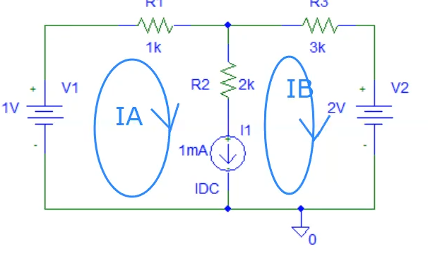
(1)
(2)
2º Super-Malha:
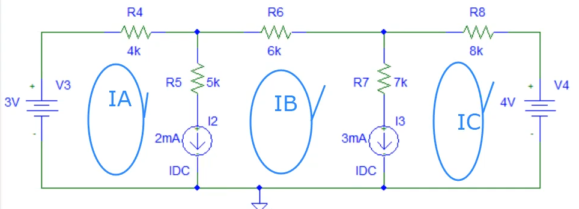
(1)
(2)
(3)
Conceito de super-nó:
Quando entre dois nós essenciais existe um ramo com uma fonte de tensão.
Super-nós:
UM SUPER-NÓ NÃO PODE SER NÓ DE REFERÊNCIA
Super-nó:
Teorema de Thevenin - permite converter um circuito complexo num circuito simples composto por uma fonte de tensão (tensão de thevenin) e uma resistência (resistência de thevenin).
Teorema de sobreposição - permite converter um circuito complexo num conjunto de diversos circuitos simples.
Sistema de eletrónico (fonte de tensão, fontes de corrente, resistências, condesadores e as bobinas).
Memória.
Establidade.
Causais.
Linearidade ( fontes de tensão, fonte de corrente e resistências)
um circuito com um díodo ou transistors é um exemplo de um circuito não linear porque pode ou não transportar corrente dependendo da corrente/volagem
Exemplo
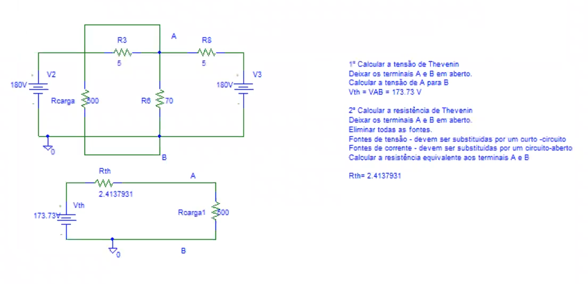
Wikipedia - Diodo semicondutor
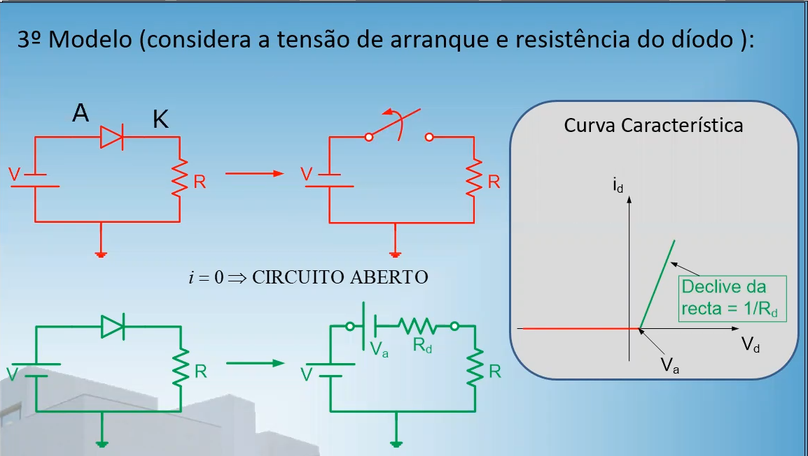
Análise de circuitos com díodos:
1º Identificar o nº máximo de estados.
Nº máximo de estados é 2 elevados ao numero de díodos
Exemplos:
1 díodo = 2¹ = 2 ESTADOS
Diodo conduz
Diodo n/conduz
2 díodos (D1,D2) = 2² = 4 ESTADOS
D1 conduz e D2 conduz
D1 conduz e D2 n/conduz
D1 n/conduz e D2 n/conduz
D1 n/conduz e D2 conduz
2º Analisar todos os estados de forma individual
Começar por analisar o estado em que mais dóiodos conduzem.
Impor a condução do díodo (partir do pressuposto que o díodo conduz)
Substituir o díodo pelo circuito equivalente em condução.
Impor o sentido correto para a corrente.A corrente no díodo deve ter o sentido do ânodo para o cátodo.
Impor a condição : Id > 0 -> obter a condição que determina a condução do díodo. Qual o valor da tensão de entrada que garante a condução do díodo.
Identificar para que valores de tensão de entrada o díodo conduz.
Relacionar a tensão de saída com a tensão de entrada (função transferência.)
agregar os valores das equações/ condições obtidas para cada um dos estados numa só equação não linear - função transferência analítica.
Representar graficamente a função transferência.
representação temporal das formas de onda da tensão de entrada e de saída.
Análise de circuito com díodos (fontes de tensão alternada)
Identificar o nº de estados.
Nº máximo de estados = 2 ^ (nº de díodos)
Analisar individualmente todos os estados.
Começar por analisar o estado em que o díodo conduz (partir do pressuposto que o díodo conduz).
Substituir o díodo pelo circuito equivalente em condução
Impor o sentido correto para a corrente (A -> K)
Analisar o circuito utilizando a lei das malhas.
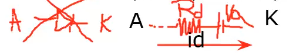
Rd = 100Ω
Vo = 0,7V
Relacionar a corrente do díodo (id) com a tensão de entrada do círcuito (vin).
Substituir o díodo pelo circuito equivalente em n/condução.
Analisar o circuito utilizando a lei das malhas.
Determinar para que valores de vin o díodo n/conduz.
Relacionar a tensão de sáida (vout) com tensão de entrada (Funcão tranferência)
Juntar ambas as equações numa equação não linear → função transferência analítica.
Representar a função transferência graficamente.
Representar as formas de onda da tensão de entrada e saída em função do tempo.
Díodos e resistência:
Passivos.
Dois terminais.
Transístores:
Ativos.
Três terminais
Aplicações (transistores):
Linear (potenciómetro controlado eletronicamente).
Fontes de alimentação lineares.
É um dispositivo que limita a tensão, por exemplo podemos usar a divisão de tensão para obter uma fonte de 5V a partir de uma fonte de 12V com resistencias desta forma (graças ao divisor da tensão):
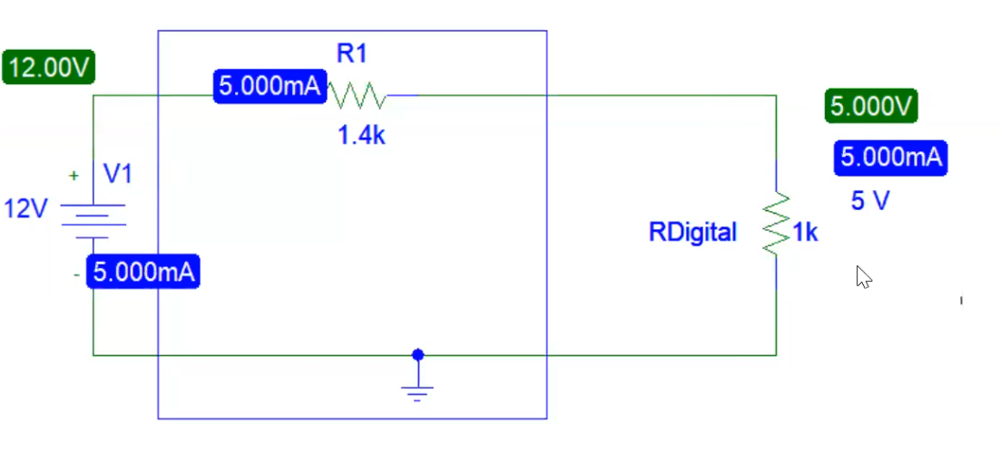
A resistencia da fonte tem de ser ajustada diacordo com a resistencia do dispositivo divital para que se de sempre 5V
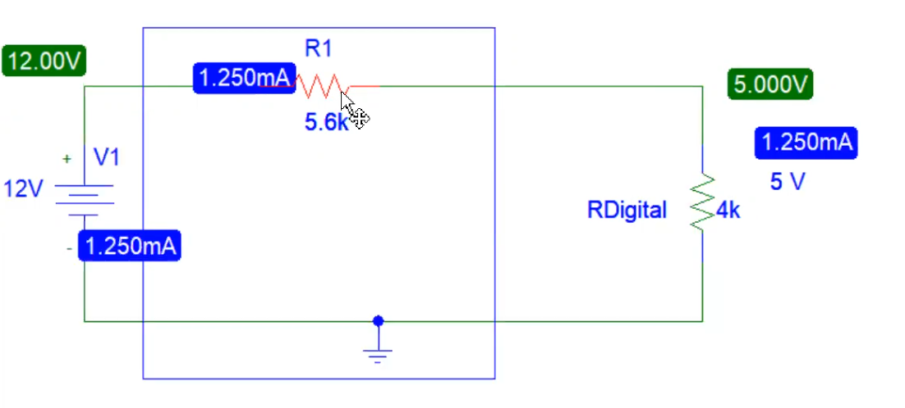
Para tal usa se o transistor para comtrolar digitalmente a reistencia R1.
Amplificador
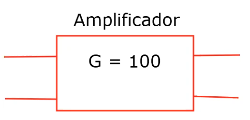
Corte/saturação ( interruptor ).
Transístores:
MOSFET - transístor de efeito de campo de óxido metálico semicondutor.
Simbolo:
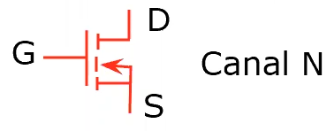
Exemplo Funcional:
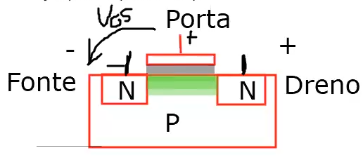
BJT - transístor de bipolar de junção.
Transístores Bipolares:
NPN
Simbolo:
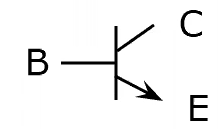
Estrutura:
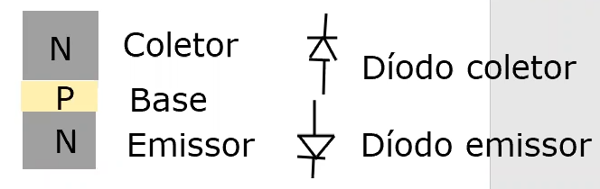
PNP
Simbolo:
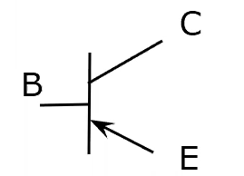
Estrutura:
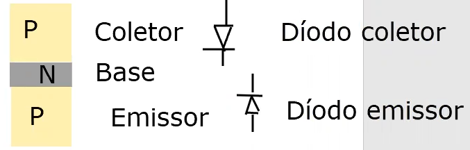
Discriçào:
Emissor: fortemente dopada e de dimensão intermédia - emite.
Base: fracamente dopada e de dimensão muito reduzida.
Coletor: Dopagem intermédia e de dimensão muito grande.
Transístores BJT
Polarização - aplicação de uma tensão aos díodos (DE e DC) que compõe o transístor
DE e DC diretamente polarizado - região de saturação (interruptor fechado)
DE e DC inversamente polarizado - região de corte (interruptor aberto)
DE diretamente polarizado e o DC inversamente polarizado - região ativa (linear) - amplificador.
Amplificador com transístor BJT (configurador):
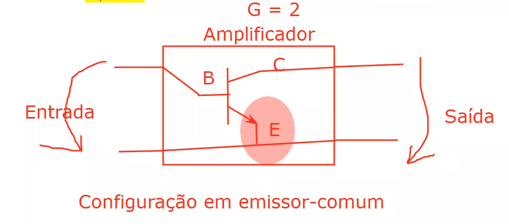
Curva caracteristica transístor BJT na configuração em emissor-comum:
Entrada
A curva caracteristica é de um díodo porque é uma relação B com E
Saída
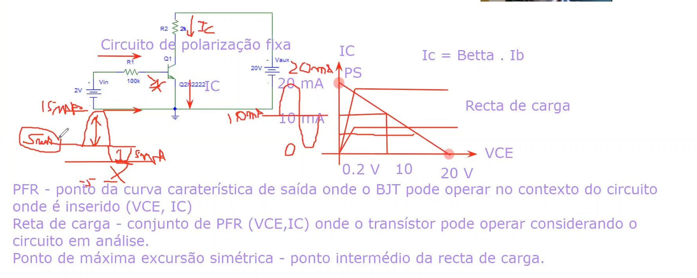
Simulações:
Circuitos
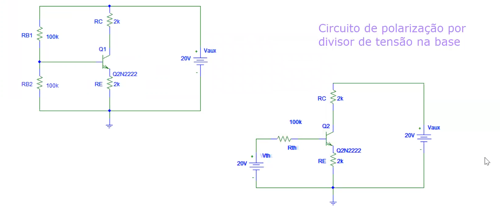
Calculos
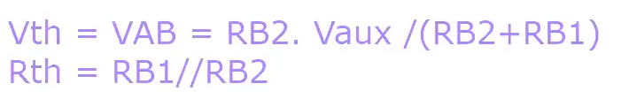
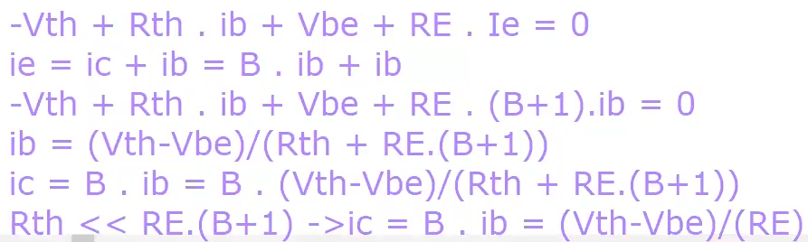
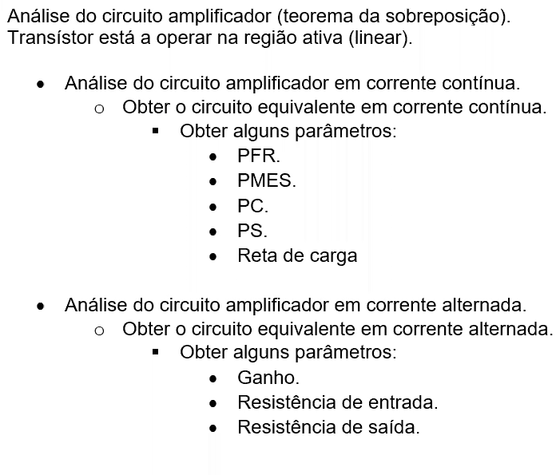


Existem 4 nós essenciais
| Nó | Expressão |
|---|---|
| A | I1 + I2 + I3 = 0 |
| B | I3 = I5 + I4 |
| C | I2 + I4 = I6 |
| malha | Expressão |
|---|---|
| m1 | 25·I2 - 10·I4 - 5·I3 = 0 |
| m2 | 10·I4 + 8·I6 - 70·I5 = 0 |
| m3 | 70·I5 - 180 + 5·I3 = 0 |
| I1 | I2 | I3 | I4 | I5 | I6 | |
|---|---|---|---|---|---|---|
| 1·I1 | 1·I2 | 1·I3 | 0 | 0 | 0 | = 0 |
| 0 | 0 | -1·I3 | 1·I4 | 1·I5 | 0 | = 0 |
| 0 | 1·I2 | 0 | 1·I4 | 0 | -1·I6 | = 0 |
| 0 | 25·I2 | -5·I3 | -10·I4 | 0 | 0 | = 0 |
| 0 | 0 | 0 | 10·I4 | -70·I5 | 8·I6 | = 0 |
| 0 | 0 | 5·I3 | 0 | 70·I5 | 0 | = 180 |
Setup dos dados:
A = [
1 1 1 0 0 0
0 0 -1 1 1 0
0 1 0 1 0 -1
0 25 -5 -10 0 0
0 0 0 10 -70 8
0 0 5 0 70 0
]
b = [0;0;0;0;0;180]
Como obter os resultados:
(1)
sendo x as incognitas IX como I1, I2 etc
(2)
(3)
(4)
logo na formula da calculadora escrevemos A^-1 * b
e assim obtemos:
I1 = -12
I2 = 4
I3 = 8
I4 = 6
I5 = 2
I6 = 10
P = V·I1 = 180·I1 = 180·12 = 2160W = 2.16 kW
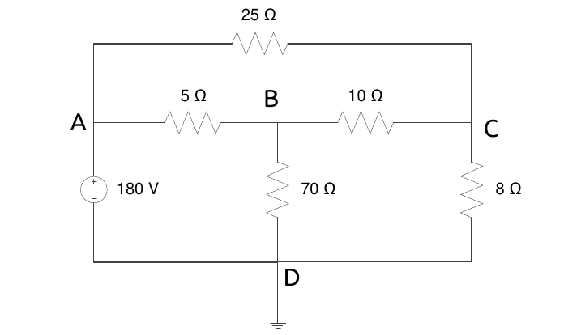

m1 : 25·I1 + 10·(I1-I3) + 5·(I1 - I2) = 0
m2: 5·(I2 - I1) + 70·(I2 - I3) - 180 = 0
m3: 10·(I3 - I1) + 8·(I3) + 70·(I3 - I2) = 0
| I1 | I2 | I3 | |
|---|---|---|---|
| 25+10+5(40) | - 5 | - 10 | = 0 |
| -5 | 5+70(75) | -70 | = 180 |
| -10 | -70 | 10+8+70(88) | = 0 |
A = [
40 -5 -10
-5 75 -70
-10 -70 88
]
b = [0;180;0]
resultado = A^-1 * b
resultado =
4.
12.
10.
I1 = 4A I2 = 12A I3 = 10A
P = -V·I2 = -180 · 12 = -2160W = -2.16kW
É o nó D.
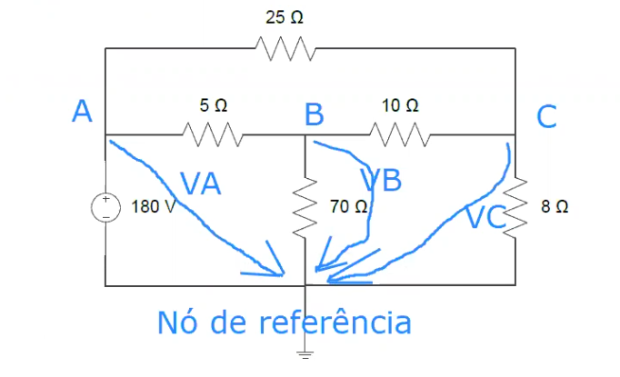

Nó A: I1 + I2 + I3 = 0 Nó B: I3 = I5 + I4 Nó C: I5 + I2 = I6
I1 = ? → VA = 180
25 · I2 + VC - VA = 0 → I2 = ( VA - VC ) / 25
5 · I3 + VB - VA = 0 → I3 = ( VA - VB ) / 5
I4 = VB / 70
10 · I5 + VC - VB = 0 → I5 = ( VB - VC ) / 10
I6 = VC / 8
Nó A:
I1 + ( VA - VC ) / 25 + ( VA - VB ) / 5 = 0
<=> I1 + VA/25 - VC/25 + VA/5 - VB/5 = 0
<=> I1 - VB/5 - VC/25 = -180·(1/25+ 1/5)
Nó B:
( VA - VB ) / 5 = ( VB - VC ) / 10 + VB / 70 <=>
<=> VA/5 -VB/5 = VB/10 - VC/10 + VB/70
<=> VA/5 + VB·(-1/5 - 1/10 - 1/70) + VB/10 = 0
<=> VB·(-1/5 - 1/10 - 1/70) + VB/10 = -180/5
Nó C:
A = [
1 -1/5 -1/25
0 -1/5-1/10-1/70 1/10
0 1/10 -1/10-1/25-1/8
]
b = [
-180*(1/25+1/5)
-180/5
-180/25
]
resultado = A^-1*b
I1 = -12 I2 = 140 I3 = 80
P - V·I1 = 180 · (- 12) = -2160 W = -2.16 kW